Carpride Enhanced remplace l'interface de ton Carpuride 702BS par un vrai tableau de bord : trois compteurs, pressions des pneus, carnet de trajets, alertes et mises à jour par Wi-Fi. CarPlay et Android Auto restent intacts.
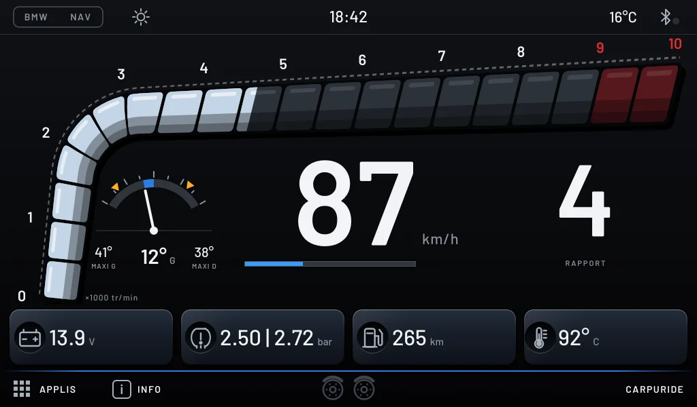
Passe de l'un à l'autre d'un appui long. Thème jour, nuit ou automatique, shift light et zone rouge réglables.
Chaque écran se pilote au toucher ou à la molette, gants compris.
Moteur, air, pressions avant / arrière, autonomie, batterie, trip, altimètre avec profil de la sortie, moyenne et angle maxi. Avec la photo de ta propre moto.
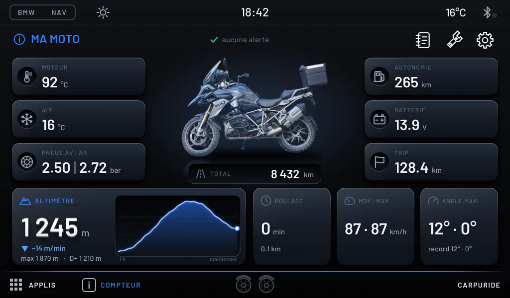
Distance, temps de roulage, vitesses, dénivelé, angles, température et profil d'altitude. Export CSV sur la carte SD.
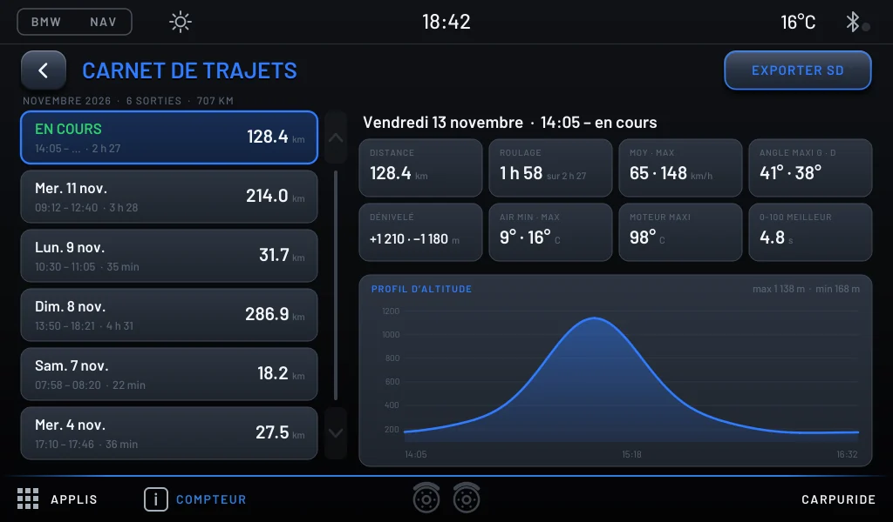
Verglas, autonomie basse, batterie faible, pneus sous-gonflés au démarrage. Le message s'affiche aussi dans CarPlay et Android Auto.
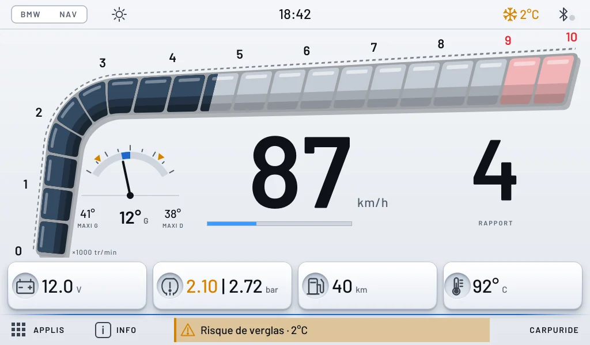
Vidange, révision, pneus, plaquettes : chaque ligne suit son intervalle en kilomètres et prévient quand l'échéance approche.
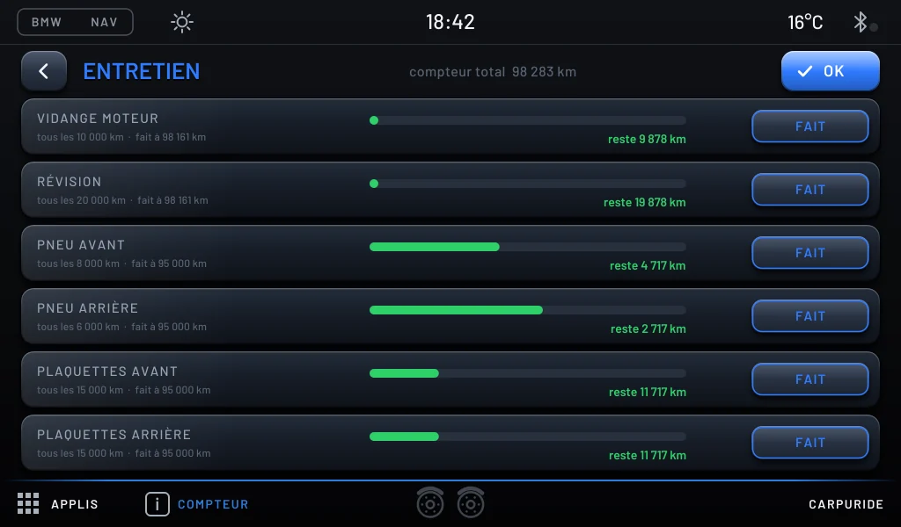
Réglages, carnet et entretien exportés et réimportés en un appui.
Vitesse maxi, angles gauche / droite, chrono 0-100 et remise à zéro séparée trajet / records.
Toute l'interface dans les deux langues, à changer dans les réglages.
Pendant CarPlay ou Android Auto, une barre fine affiche les valeurs que tu choisis.
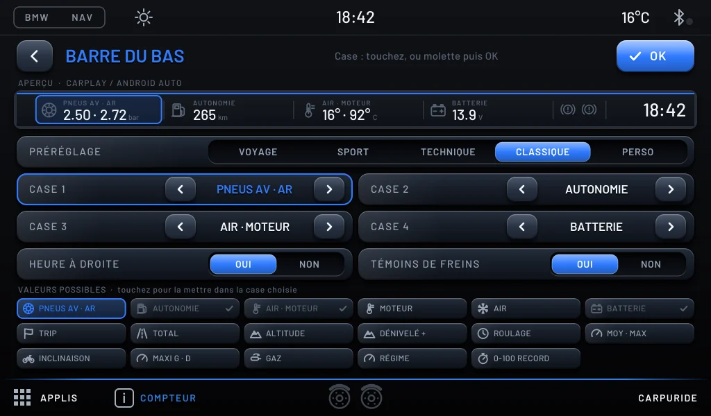
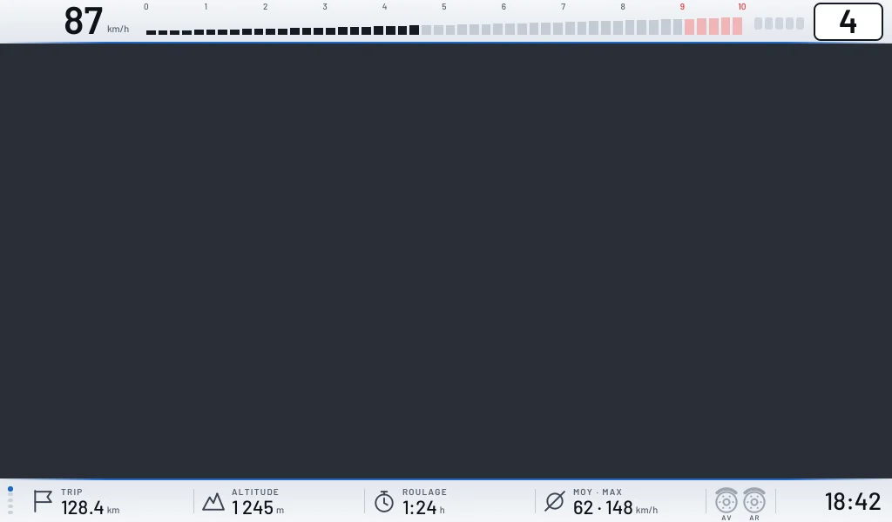
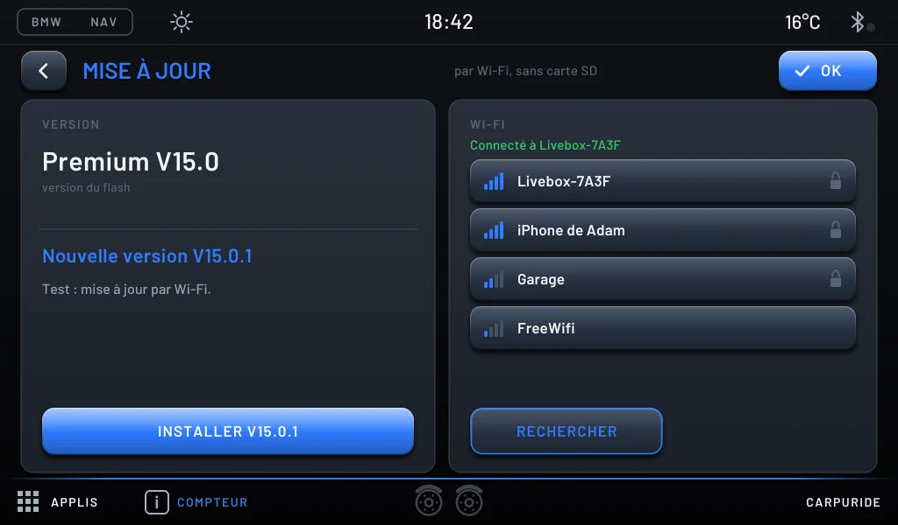
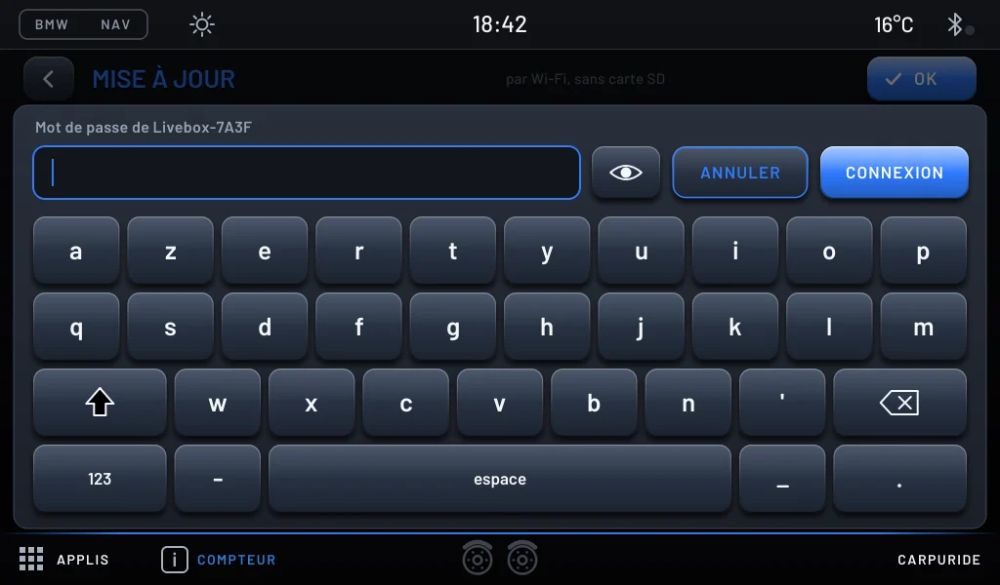
L'écran se connecte à ton Wi-Fi ou au partage de ton téléphone et installe les nouvelles versions tout seul.
Les réglages sont rangés en quatre onglets, et la jauge d'inclinaison se calibre sur ta moto.
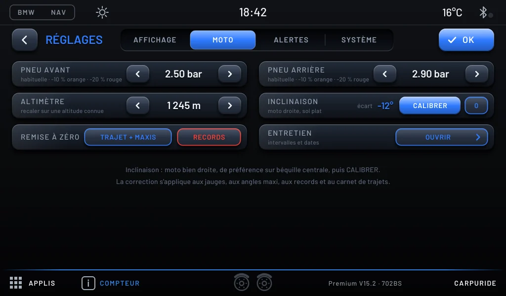
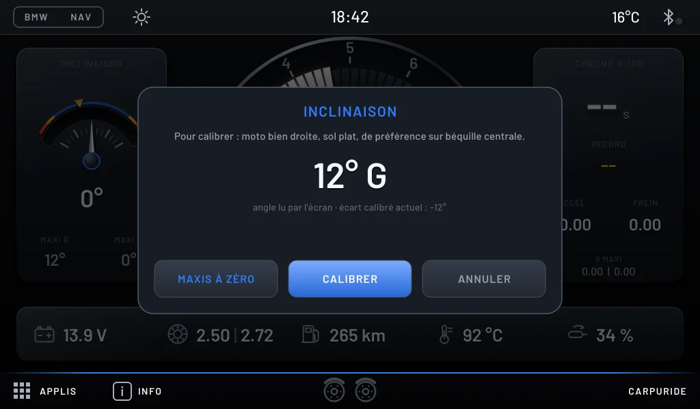
L'appli se connecte toute seule à l'écran dès qu'Android Auto démarre. Rien à régler en roulant.
La Basique est gratuite et suffit pour un compteur propre. La Premium débloque tout le reste, avec une licence liée à ton appareil.
Le fichier de ta version (Basique, ou Premium généré pour ton écran).
Le fichier à la racine d'une carte micro-SD formatée en FAT32.
Insère la carte, l'écran se met à jour seul. Ne coupe pas le contact pendant l'opération.
Les versions suivantes de la Premium arrivent ensuite par Wi-Fi.
C'est une couche logicielle qui s'installe par-dessus le firmware d'origine, sans toucher à ses fonctions : CarPlay, Android Auto, Bluetooth et réglages Carpuride restent ceux d'origine.
Toutes les versions du 702BS et du 702BS Pro. Les différences entre révisions matérielles sont gérées par les fonctions d'origine de l'écran. Les autres modèles, dont le 702 tactile, ne sont pas pris en charge.
Oui : un flash par carte SD du firmware d'origine, que nous te fournissons. Carpride Enhanced ne touche ni au bootloader, ni au noyau, ni au système.
Non : le retour au firmware d'origine est toujours possible, et l'écran retrouve alors exactement son logiciel officiel.
Oui, ils restent ceux d'origine. Carpride Enhanced ajoute seulement la barre d'informations en bas de l'écran.
Oui. La licence est définitive, elle n'expire jamais et toutes les futures mises à jour sont incluses.
Oui : la licence est liée à ton appareil. Si ton écran est remplacé sous garantie, elle est transférée sur le nouveau.
Carpride Enhanced ne peut pas être bloqué à distance. Il reste en place tant que tu ne réinstalles pas un firmware Carpuride d'origine.
Oui : si l'installation échoue sur un écran annoncé compatible, tu es accompagné jusqu'à ce que tout fonctionne.
Il vient du capteur intégré à l'écran Carpuride. Si l'écran est monté un peu penché, RÉGLAGES > MOTO > INCLINAISON > CALIBRER remet le zéro, moto droite sur sol plat (Premium).
Chaque mise à jour est signée et vérifiée avant installation. Si une nouvelle version ne démarre pas correctement, l'écran revient de lui-même à la version précédente.
Non. Elle est réservée aux écrans Premium, avec sa propre licence Connect : définitive, un téléphone appairé par écran, transférable sur un nouveau téléphone.
On appaire une seule fois avec un code à 6 chiffres affiché sur l'écran. Ensuite, l'appli se connecte toute seule à chaque démarrage d'Android Auto.
Non. Trajets, traces GPS, entretien et position de ta moto restent sur ton téléphone et ton écran.
Pas encore : l'appli démarre sur Android. Une version iPhone est prévue.